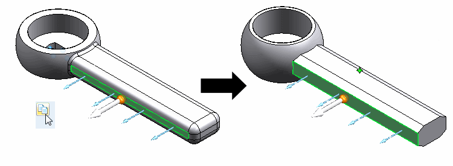

Copy and paste studies or individual simulation objects
You can copy studies, loads, constraints, connectors, and meshes within the current document or between documents. Solid Edge Simulation prevents you from pasting these objects into incompatible studies or nodes.
-
When you copy a synchronous study, it must be pasted into the Synchronous node (not the Ordered node or the Simplify node) in the Simulation pane. Similarly, ordered studies must be copied in the Ordered node.
-
When you copy a load, it must be copied into the Loads node.
Copy a study definition
You can copy a study definition along with the mesh, study geometry, loads, constraints, and connectors using the Duplicate Study command. You can choose if you want to include the mesh associated with the existing study to a new study. After you copy the study definition, you can modify the boundary conditions, solve the study, and then compare the results with the original study. You can still modify the existing study definition, without having to create the mesh again.
In the Simulation pane, right-click a study name and choose Duplicate Study. The following message is displayed:
Do you want to create a copy with Mesh?
-
To include the associated mesh in the duplicated study, click Yes.
-
To exclude the associated mesh from the duplicated study, click No.
The duplicated study is listed in the Simulation study navigation pane. The name of the new study is based on the original study type, and the study number increments by one digit.
If you copied Modal Study 1, then Modal Study 2 is the name of the new study. Even if you renamed your Modal Study 1 before you copied it, the default name of the duplicated study is still Modal Study 2.
-
You can also use the commands Copy and Paste to copy simulation objects using any of these methods:
-
On the ribbon in the Home tab → Clipboard group.
-
Using Ctrl+C and Ctrl+V keyboard shortcuts.
-
Right-click a simulation object and choose Copy.
-
-
You can also drag a simulation object or study to copy it to another node, study, or document.
-
When copying between documents, a study must exist in the second document before you can paste individual objects into it.
Copy simulation loads, constraints, connectors, meshes
|
To |
Do this |
Example |
|
Copy all simulation objects in a study node. |
Right-click the node, and then choose Copy. |
To copy all of the constraint definitions from one study to another, right-click the Constraints node. |
|
Copy individual simulation objects. |
First expand the node, and then right-click the specific object and choose Copy. |
To copy a mesh edge sizing definition, expand the Mesh node, and then right-click and choose Copy from the Edge Size 1 node. |
You can copy loads and constraints from one part file to another, even if the parts are dissimilar. However, when you paste the object, you may see the following error symbol and message in the Simulation pane indicating that the load is unable to bind to geometry on the new part:
The solution is to edit the load, and select a new face on the same part. The load will then bind automatically.
